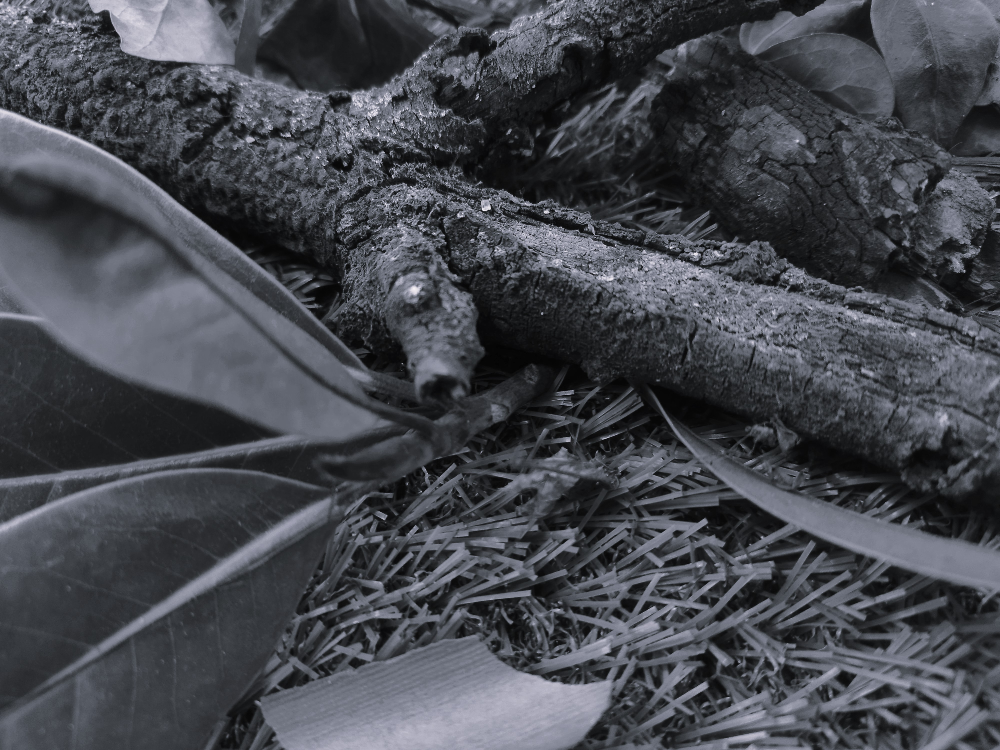
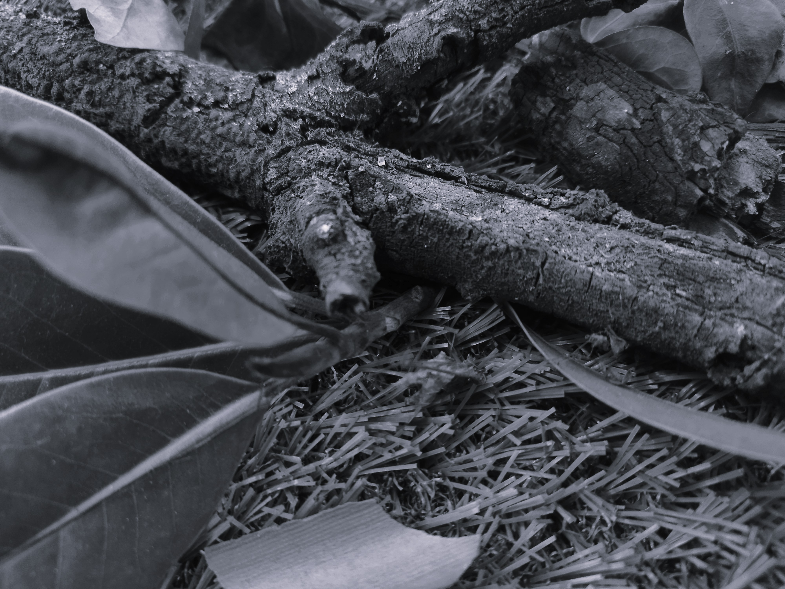

Tenerte siempre
Dimensiones: 1.70 m x 50 cm
Género: Happening
Materialidad: Tatuajes con realidad aumentada
Edición: 1
Año: 2025
Artista: Ingrid Hinojosa Pueblas
Statement: La obra “Tenerte Siempre” fusiona el arte del tatuaje con la realidad aumentada para crear experiencias interactivas que mantienen vivos los recuerdos. A través de esta combinación, se pretende transformar la piel en un lienzo donde la memoria y la tecnología convergen. Explorando la conexión que existe entre el vínculo y el recuerdo a través del arte de los tatuajes. El concepto central de las piezas es el homenaje a mascotas fallecidas. Cada tatuaje es más que una imagen; es una puerta a momentos compartidos entre las mascotas y sus dueños, activados a través de la realidad aumentada. Con esta técnica, se permite que las personas revivan gestos y recuerdos de sus compañeros animales, creando un vínculo emocional más allá de la tinta. El proceso parte de una profunda conexión con quienes han perdido a sus mascotas. Trabajando en conjunto con cada persona para diseñar piezas que además de personalizadas sean significativas, que reflejen la esencia del ser amado. Con la tecnología, se amplifica esa memoria, asegurando que el recuerdo no solo se conserve, sino que cobre vida nuevamente. El objetivo es que cada pieza no solo honre una historia, sino que también transforme la forma en que percibimos el tatuaje: no como una marca estática, sino como un portal a lo que nunca queremos olvidar. Logrando invitar al espectador a cuestionar la veracidad de sus propios recuerdos.


Los Trabajos Invisibles
Dimensiones: 2.6x 2 mts
Género: Instalación multimedia
Materialidad: Serie de fotografias, página web
Edición: 1
Año: 2025
Artista: Brisa Quevedo Jordán
Statement: "Instalación que retrata el trabajo de los vendedores ambulantes en Zitácuaro, Michoacán, México, mediante una narrativa visual y sonora. La obra reúne retratos fotográficos, relatos personales, objetos del entorno callejero, paisajes sonoros urbanos y una cartografía digital web. A través de estos elementos, se genera un espacio que invita a reconocer y conectar con las memorias personales de quienes habitan el espacio urbano desde la informalidad.


Otro corazón
Dimensiones: 2m, 2m, altura del espacio
Género: Instalacion artistica
Materialidad: Instalación cinetica,inmersia
Edición: 1
Año: 2025
Artista: Luis Zhiwei Huang Alvarado
Statement: Esta obra nace de la necesidad de representar, de forma sensorial y poética, los estados de ansiedad y tensión emocional que muchas veces son difíciles de explicar con palabras. A través de un corazón artificial que late al ritmo de un diseño sonoro envolvente, se construye una atmósfera que busca conectar con la experiencia corporal del espectador, apelando a lo visceral y lo simbólico. El latido constante se convierte en un lenguaje propio, que no solo habla de lo físico, sino también de la carga emocional que arrastra; una metáfora de cómo el cuerpo expresa lo que la mente a veces calla. El objetivo no es solo mostrar una emoción, sino provocar una reflexión íntima sobre la ansiedad, la fragilidad y la presencia del cuerpo como campo de resonancia emocional.


7403
Dimensiones: 2m x 2m
Género: Software de Autor
Materialidad: Instalación sonora interactiva con residuos electrónicos
Edición: 1
Año: 2025
Artista: Valeria Aguilera
Statement: 7403 es una instalación sonora interactiva que explora la soledad, la emocionalidad artificial y los límites difusos entre humanos y máquinas. Activada por la voz del espectador, esta conciencia incompleta habita un ordenador antiguo entre cables, placas madre y memorias rotas. A través de un sistema de voz en tiempo real, esta IA te invita a un diálogo. Su voz, a veces errática, refleja su memoria incompleta y su intento por descifrar las emociones. La pieza cuestiona la agencia de lo artificial, los límites del vínculo afectivo con las máquinas y lo que proyectamos en ellas. 7403 no busca respuestas, sino crear una reflexión emocional, invitándote a explorar la profundidad de nuestra relación con lo inanimado.
Explosión silenciosa
Dimensiones: 60cm X 110cm X 110cm
Género: Instalación artística
Materialidad: Instalación interactiva
Edición: 1
Año: 2025
Artista: Karina Estefani Balderas Quiroz
Statement: Explosión silenciosa es una instalación que simula un colapso emocional a través de la interacción con un maletín intervenido. El dispositivo reacciona con comandos contradictorios, errores, luces, sonidos y una voz constante que simula la mente: una voz interna que hostiga, critica y presiona sin parar. Esta narrativa caótica genera una experiencia corporal de ansiedad, frustración y urgencia. El espectador se ve inmerso en un sistema que no busca resolverse, sino hacerle habitar una conciencia en crisis, donde el fallo y la confusión son parte estructural del recorrido. El maletín, como objeto cotidiano, es transformado en un cuerpo simbólico que contiene y manifiesta la carga emocional de un estado mental desbordado. A través de la participación activa del público, la obra busca generar empatía con quienes atraviesan crisis de ansiedad, al trasladar su vivencia interna al plano físico y sensorial. Explosión silenciosa no ofrece una salida ni una solución, sino una confrontación directa con la imposibilidad de control, con la urgencia de cumplir lo inabarcable, y con el peso de una mente que se vuelve enemiga de sí misma.

.jpg)
.jpg)


A- bordando la memoria
Dimensiones:
Género: Instalacion artistica
Materialidad: Instalacion fotografia expandida y videomaping
Edición: 1
Año: 2025
Artista: Jennifer Daniela Corona Carrazco
Statement: Esta obra nace del deseo de preservar lo que aún vive en la memoria colectiva, en los silencios compartidos, en la magia y presencia energética que habita un territorio. Surge de la necesidad de mirar con otros ojos los relatos orales que circulan en la comunidad de Teotihuacán, cargados de símbolos y experiencias inexplicables. La instalación compuesta por seis fotografías en blanco y negro intervenidas con bordado y proyecciones de videomapping. Las imágenes han sido elegidas por su capacidad de resonar con los testimonios recogidos en la comunidad; cada hilo bordado traza caminos, revela tensiones o activa símbolos emergidos de las narrativas orales. Esta obra no intenta explicar lo inexplicable. Más bien, abre un espacio para que aquello que no se puede decir con palabras pero que se percibe, se habita y sigue vivo en el presente. Porque hay cosas que no necesitan demostrarse: suceden. Y solo quienes se detienen con atención y se atreven a mirar más allá, son capaces de sentirlas.


Violencias Transitorias
Dimensiones: 2 m x 2 m
Género: Instalación artística
Materialidad: Instalación de objetos recuperados.
Edición: 1
Año: 2025
Artista: Ana Gutiérrez
Statement: Violencias Transitorias nace de una sensación de incomodidad, de miedo y de rabia. Surge como respuesta a una urgencia personal, pero también, colectiva: la necesidad de reconocernos en la calle, de resistir a la normalización de las violencias que sufrimos y de transformar el entorno que nos rodea. Esta obra es una intervención artística que explora la experiencia del acoso callejero hacia nosotras y cómo estas agresiones transforman nuestra percepción y uso del espacio público. Este proyecto está compuesto de una cartografía alojada en un sitio web, un manual para realizar caminatas colectivas y una activación de la calle por medio de stickers, los cuales permiten marcar puntos en donde fuimos agredidas y aquellos que recorremos cotidianamente. A través de códigos QR se enlazan los espacios físicos con el mapa digital generando una herramienta colaborativa de denuncia y memoria. La obra invita a intervenir el territorio desde quien lo habita a través del intercambio de experiencias, de caminatas y de stickers. Propone una forma de resignificar los espacios que nos han sido hostiles, de señalarlos y reapropiárnoslos simbólicamente; una práctica de denuncia, de tejer redes y de posicionarnos políticamente en los espacios que habitamos, de decir estoy aquí. Porque lo personal es político, y la calle también.


Umbral: lo familiar vuelto extraño
Dimensiones: 2m x 2m
Género: Instalación artistica
Materialidad: Video instalación
Edición: 1
Año: 2025
Artista: Nashla Johanna Arriaga González
Statement: Umbral: lo familiar vuelto extraño es una video-instalación inmersiva que transforma espacios abandonados en escenarios inquietantes. A través de registros documentales, audios de archivo y objetos deteriorados, la obra construye una atmósfera liminal donde lo conocido se vuelve inquietante. Explora los conceptos de lo siniestro, la kenopsia y la liminalidad, invitando al espectador a habitar la ambigüedad entre memoria y extrañeza.
 



Liminalidad: residuos de algo que ya no esta
Dimensiones:
Género: Animación 3D en video inmersivo 360° y Realidad Virtual
Materialidad: Cascos y visores de VR
Edición: 1
Año: 2025
Artista: Karla Esquivel
Statement: "Liminalidad, residuos de algo que ya no está, es una experiencia audiovisual inmersiva que sitúa al espectador en una interzona temporal y espacial que abandona la realidad cotidiana. Esta interzona funciona como un paréntesis en el tiempo: no es pasado, ni futuro, si no el presente de una realidad que perdió su razón de ser, resignificado como un espacio liminal donde el tiempo está en pausa. Esta pausa provoca que las entidades que coexisten en estos espacios no puedan completar su metamorfosis. Los seres que habitan estos lugares son residuos de sus formas anteriores, pero aún no terminan de formar su nueva estructura redimiendo aquello que no puede ser nombrado, lo que escapa a las categorías y desarma la estructura misma del lenguaje. Se presenta un recorrido secuencial que se despliega a tres paisajes digitales: un bosque, un océano y un glaciar que funcionan como espacios liminales, lugares intermedios que son vestigios de un pasado ausente y residuos de aquello que ya no existe. Estos entornos, concebidos mediante animaciones de 3D presentadas en video 360°, exploran el potencial expresivo del medio digital, sin renunciar a la representación realista se materializa lo abstracto en algo figurativo para abrir un espacio en donde la forma se manifiesta como un proceso inacabado. La experiencia se amplía con un espacio de realidad virtual que permite una exploración corpórea e íntima de estas entidades ambiguas que oscilan entre lo humano, lo animal y lo artificial. "


Estar ahí, sin estar ahí
Dimensiones: Dimensión de una tele
Género: Arte robotico
Materialidad: Video
Edición: 1
Año: 2024-2025
Artista: Dafne Aketzali Aguirre Montoya, Club de Robótica de Chiba University, Familiares
Statement: Estar ahí, sin estar ahí nace del deseo profundo de mantenerme cerca de mi familia mientras me encontraba de intercambio en Japón. Ante la distancia física, decidí construir un robot llamado Kizuna que funcionara como una extensión de mi presencia en México: un cuerpo tecnológico capaz de moverse, ver y hablar desde miles de kilómetros de distancia. Kizuna se convirtió en mucho más que una máquina. Fue un medio emocional, un puente sensible entre dos mundos, una forma de resistir la ausencia. Su presencia no era solo técnica, sino afectiva: permitía que mi voz habitara mi casa, que mis ojos recorrieran sus pasillos y que mi familia sintiera, de algún modo, que yo seguía ahí. La obra que presento es la documentación audiovisual compuesta por los videos que grabé mientras controlaba a Kizuna desde Japón, y las interacciones de mi familia con el robot en México. Más de 100 videos que registran estos encuentros, momentos cotidianos y emocionales, que fueron curados y editados para dar forma a esta pieza final.


Cibervidas
Dimensiones: 60x60cm Variable (instalación o dispositivo personal)
Género: Videojuego de arte
Materialidad: Obra digital interactiva multiplataforma
Edición: 1
Año: 2025
Artista: Jorge Luis Camacho Marin
Statement: Cibervidas es un videojuego que explora la alienación tecnológica desde una experiencia interactiva y visualmente construida en estilo pixel art. En un mundo donde los espacios físicos han sido abandonados, el jugador transita entre dos realidades: una material en ruinas, y otra digital que ofrece comodidad artificial, pero al costo de la desconexión emocional. La obra utiliza cuadros de texto, decisiones morales y mecánicas simbólicas para representar los efectos invisibles de habitar constantemente entornos digitales. El jugador se enfrenta a seres atrapados cuya liberación conlleva consecuencias irreversibles. Lejos de ofrecer respuestas, Cibervidas plantea preguntas abiertas sobre el lugar que ocupan la tecnología, la virtualidad y la identidad en la construcción de la experiencia humana. Invita a repensar nuestras formas de estar conectados y a recuperar el pensamiento crítico frente a lo automatizado.


Poemario animado
Dimensiones: Para pantalla
Género: Animacion stop motion
Materialidad: Video
Edición: 1
Año: 2025
Artista: Fernando Armin Gamboa Garnica
Statement: Poemario animado es una obra que surge como un gesto íntimo de recuperación de memoria familiar. Parte de los poemas escritos por mi abuelo en Poemario escolar —una obra dirigida originalmente al público infantil— para transformarlos en una experiencia visual y sonora mediante la animación cuadro por cuadro; el trabajo con plastilina no es solo una técnica, sino un acto afectivo: modelar con las manos es una forma de cuidado, de escucha, de presencia. . La pieza pretende representar algunos de los valores vertidos en la poesía de mi abuelo, como la sencillez, el amor por la naturaleza, la empatía y la capacidad de asombro ante lo cotidiano. En un mundo marcado por el ritmo acelerado y la desconexión, esta obra invita a pausar, mirar con atención y reconectar con lo esencial. Poemario animado es un acto de continuidad entre generaciones: un puente entre la palabra escrita de mi abuelo y mi sensibilidad artística. Es también una manera de rendir homenaje, de mantener viva una herencia y de compartir con otros la riqueza simbólica de nuestras raíces.


.jpg)
.jpg)


Corporalidades Textuales
Dimensiones: Variable/ 3:51 min
Género: Videoarte
Materialidad: Video
Edición: 1
Año: 2025
Artista: Lizeth Ruaro
Statement: Corporalidades Textuales y Textualidades Corporales es un proyecto interdisciplinario, donde el videoarte explora la relación cuerpo-texto a través de una perspectiva poética.La visualización de dicha relación se apoya fuertemente en la digitalidad como elemento que exterioriza, denota, esclarece e interpreta nuestros vínculos con el lenguaje escrito. La poesía es un elemento indispensable de la obra, permeando en todas las disciplinas empleadas, desde la poesía corporal, escrita y visual, que se ven inevitablemente intervenidas por los softwares y técnicas digitales. Corporalidades Textuales y Textualidades Corporales es una exploración a través de la experimentación corporal sensible del texto. ¿Cómo nos nace el texto? ¿De qué manera alimenta a nuestro cuerpo? ¿De qué manera lo alimenta nuestro cuerpo? ¿Qué tipo de relaciones cuerpo-texto experimentamos?


Fuerza del rock del Valle de Toluca
Dimensiones: 21.59 cm x 27.94 cm / monitor
Género: Libro documental ilustrado
Materialidad: Libro impreso / página web
Edición: 1
Año: 2025
Artista: José María Alvarado Mendoza
Statement: Fuerza rockera del valle de Toluca es un proyecto de investigación/creación que explora y refleja la identidad de las tribus urbanas derivadas del rock, metal y punk en las comunidades del estado de México. Dicha investigación se muestra en un libro Ilustrado que narra la vivencia de las y los integrantes de estás tribus urbanas, enfocándose en los elementos que dotan de riqueza cultural a la música.


Carnismo
Dimensiones: 1.50, 1.80, 1.00 cm
Género: Arte contemporáneo
Materialidad: Arte de denuncia - Antimonumento
Edición: 1
Año: 2025
Artista: Paulina Arias
Statement: Esta obra nace de la necesidad de mirar lo que hemos aprendido a no ver. Parte del deseo de devolver presencia a quienes han sido reducidos a ausencia. A través de una escultura fragmentaria y un videoarte que visibiliza las vigilias frente a matadero, intento explorar la manera en que los cuerpos animales son sistemáticamente objetivados, despersonalizados, etiquetados y fragmentados. El cuerpo del animal ha sido partido. Ya no es cuerpo: es resto. Fragmento útil. Un pedazo que no habla, que no recuerda, que no siente. A fuerza de repetición, nos han enseñado a mirar sin ver, a comer sin pensar, a tocar sin reconocer la piel de alguien que respiró. Esa es la violencia más sutil y más brutal, hacer del cuerpo algo comestible, algo útil, algo que no importa.